Префектура Канагава · Ёкогама · пивоварня
TDM 1874 Brewery: винная лавка с полуторавековой историей варит пиво Ёкогамы
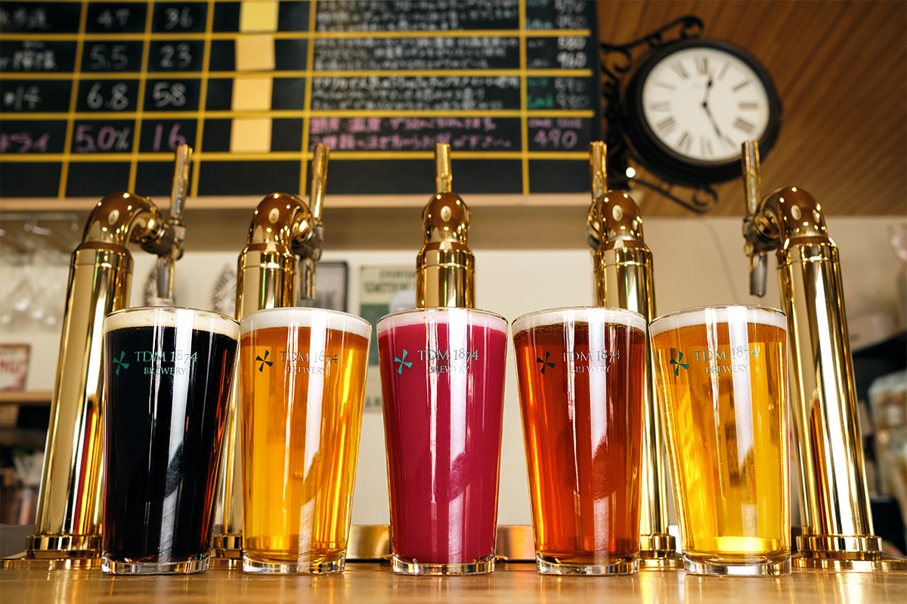
Магазин «Сакагутия» в ёкогамском районе Токаитиба торгует выпивкой с 1874 года. В 2017 году он начал варить своё пиво: из хмеля и солода со всего мира и из того, что растят фермеры по соседству.
Магазин
«Сакагутия»: выпивка как культура
Магазин «Сакагутия» стоит в ёкогамском районе Токаитиба почти полтора века. На полках сётю, сакэ, вино и крафтовое пиво, всё отобрано по всей Японии, а среди бутылок попадаются такие редкости, что любитель выпить невольно замирает у витрины.
За этим выбором стоит простое правило. Сотрудники не жалеют ни времени, ни сил: сами ездят к производителям, разговаривают с ними и берут в магазин только то, во что вложена душа мастера. Выпивку здесь считают не промышленным товаром, а частью культуры: в ней есть история и климат места, люди и урожай их земли.
Кроме торговли магазин устраивает дегустации нескольких вин подряд и семинары, на которые приглашает виноделов и пивоваров из Японии и из-за границы. Чем больше знаешь о напитке, тем больше его любишь, и «Сакагутия» продолжает рассказывать истории, которые стоят за каждой бутылкой.
Пивоварня
Пиво Ёкогамы от знатоков вина и сакэ
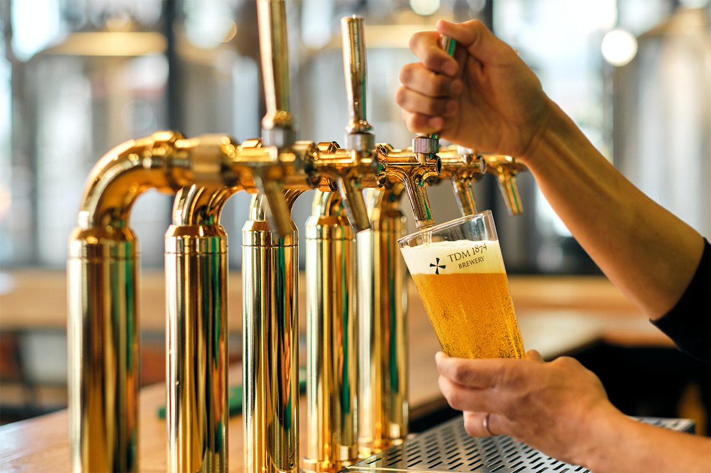
«Сакагутия» поставляет напитки примерно 800 ресторанам и барам Токио и Ёкогамы. Владельцы магазина долго думали, что ещё могут предложить этим клиентам, и пришли к мысли: нужно показать, какой глубины бывает пиво, и для этого варить настоящее крафтовое. В 2017 году появилась пивоварня TDM 1874 Brewery. Её устроили прямо в главном магазине в Токаитибе.
Название складывается из двух частей. TDM это первые буквы «Ten Days Market», английского перевода названия района: «Токаитиба» значит «рынок десятого дня». А 1874 это год основания «Сакагутии».
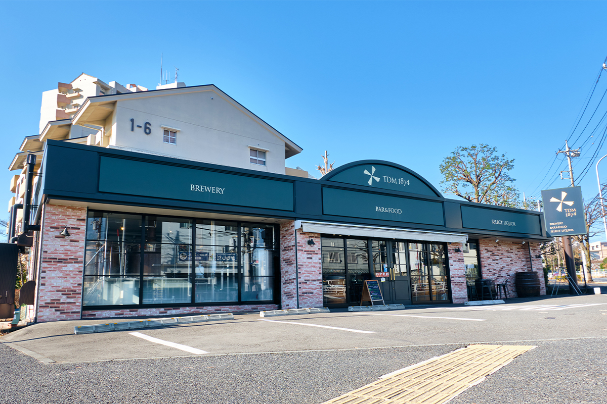
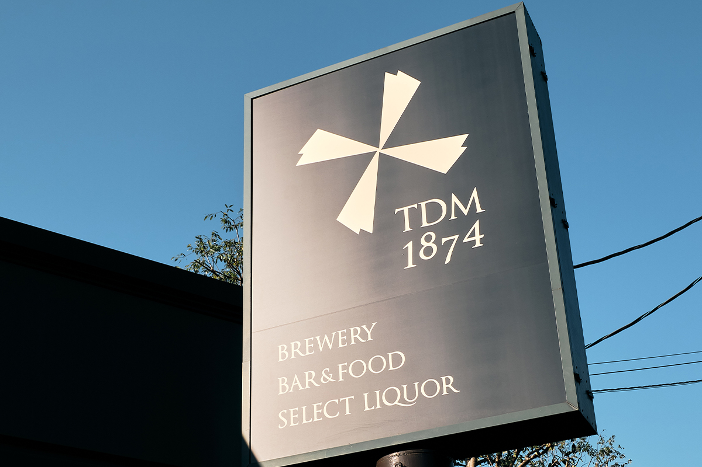
Опыт и вкус, накопленные за долгие годы торговли, ушли в пиво с ярким ароматом и своей историей. Хмель и солод для каждого сорта выбирают по всему миру, а у фермеров Ёкогамы и префектуры берут местное сырьё: груши «Хама-наси», фирменную марку Ёкогамы, и рис «Харуми», марку префектуры Канагава.
Пивоварня думает и о том, что остаётся после варки. Всю пивную дробину она отдаёт местным фермерам на удобрение, а урожай с этих полей снова идёт в пиво. Отходы превращаются в сырьё, и круг замыкается.
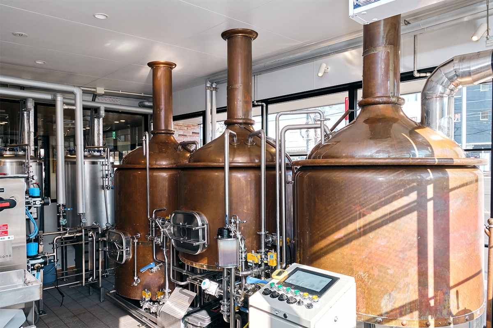
Пивовар
Джордж Джунипер из Англии
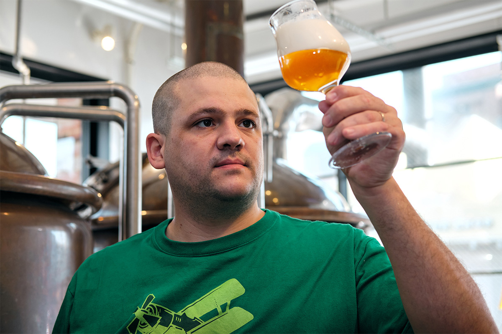
Варкой руководит англичанин Джордж Джунипер. Пивоварением он увлёкся в 13 лет, а потом изучал его как науку. На родине он возглавлял производство на пивоварне Dark Star, а после переезда в Японию набирался опыта на крафтовых пивоварнях в разных концах страны.
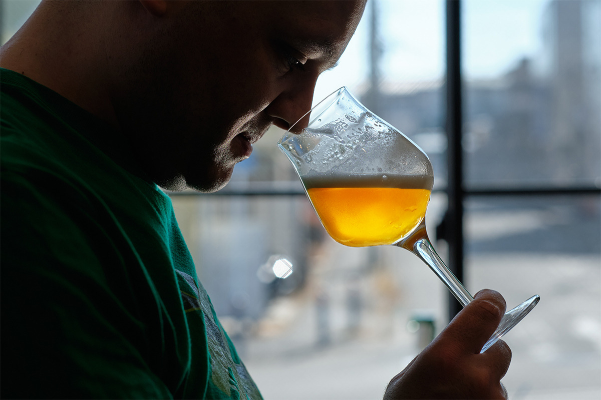
Пиво здесь всё время меняется. Есть сезонные сорта, пиво с нешлифованным рисом, совместные выпуски с местными фермами, так что в каждый приезд можно найти новый вкус.
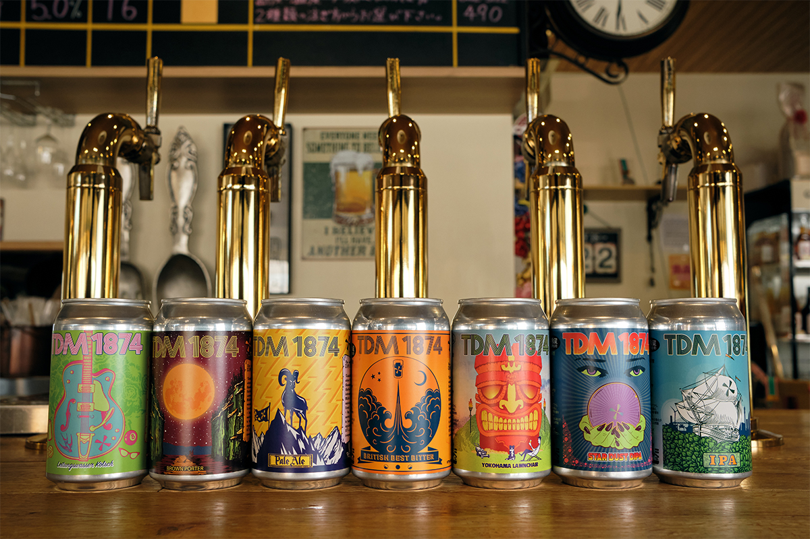
Бар
Свежее пиво у котлов
В баре при пивоварне много сортов на кранах, и пиво здесь самое свежее. Пить его можно, глядя через стекло, как это пиво варят.
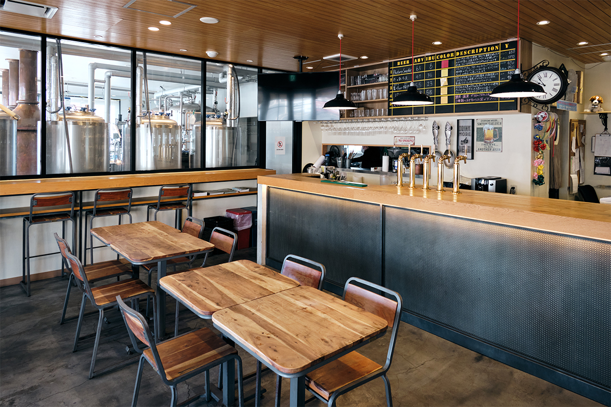
К пиву есть и кухня: целые горы мидий, копчёности собственного приготовления, острая курица по-нэшвиллски.
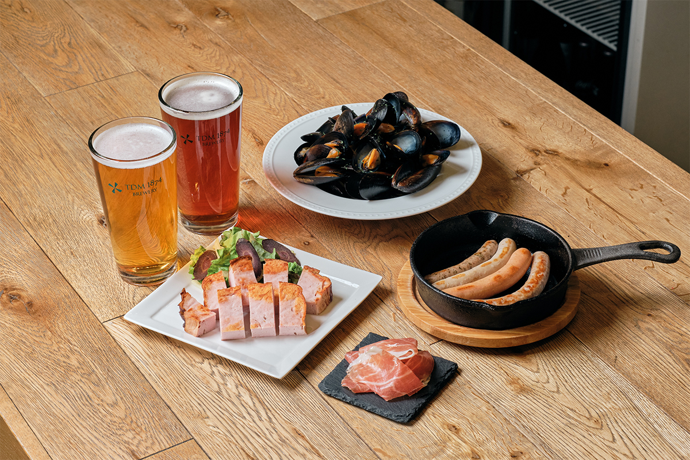
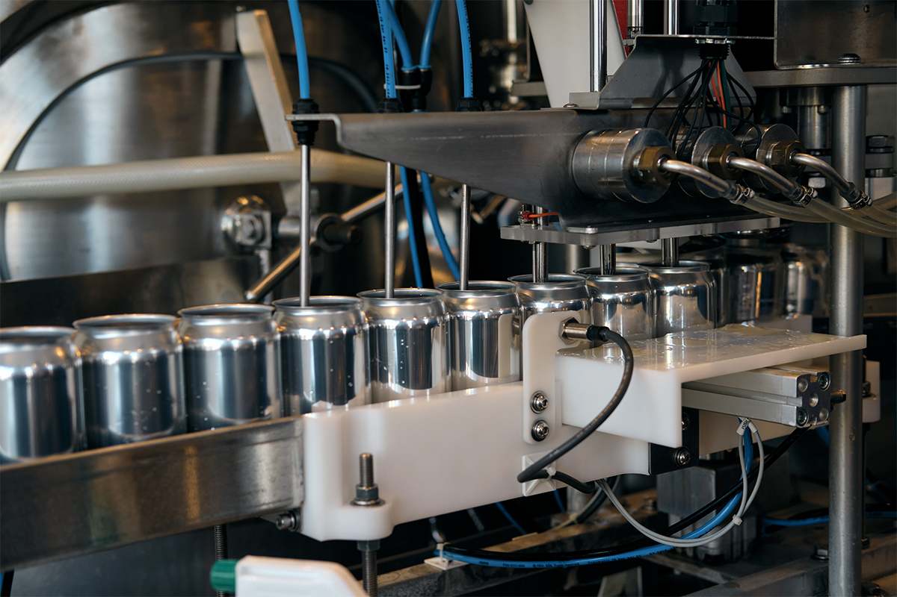
TDM 1874 Brewery
- Адрес
- префектура Канагава, Ёкогама, район Мидори, Токаитиба-тё, 835-1
- Телефон
- +81 45-985-4955
- Часы работы
- понедельник–четверг, воскресенье и праздники 11:00–20:00 (последний заказ еды 19:00, напитков 19:30); пятница и суббота 11:00–21:00 (последний заказ еды 20:00, напитков 20:30)
- Выходные
- среда